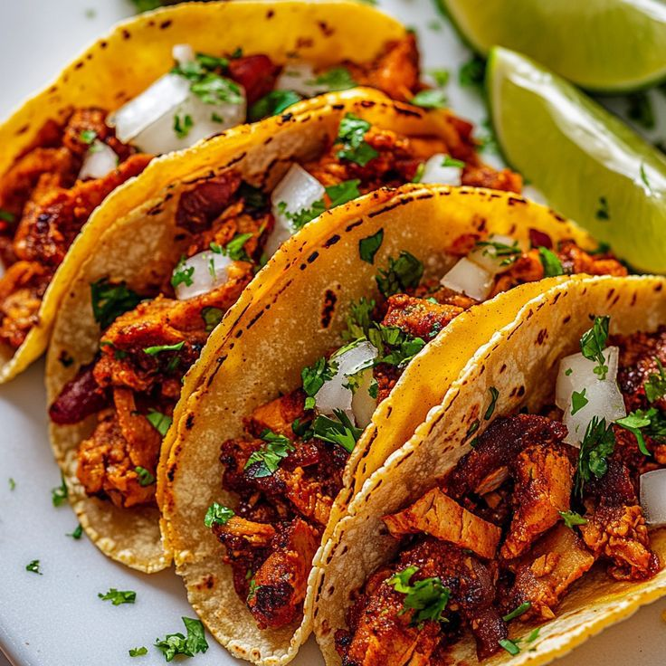
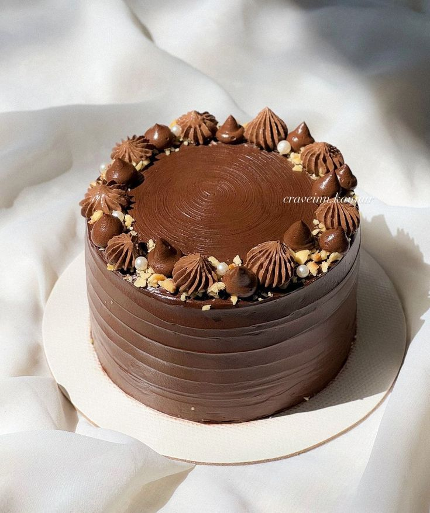

Tacos al Pastor  Tacos al pastor: carne jugosa, piña y salsa. Clásico mexicano — marinado, trompo y mucho sabor.
Enchiladas de Queso Enchiladas gratinadas listas para hornear. Rápidas y perfectas para cualquier cena.
Pastel de Chocolate  Postre perfecto para celebraciones. Húmedo, chocolateado y fácil de preparar.